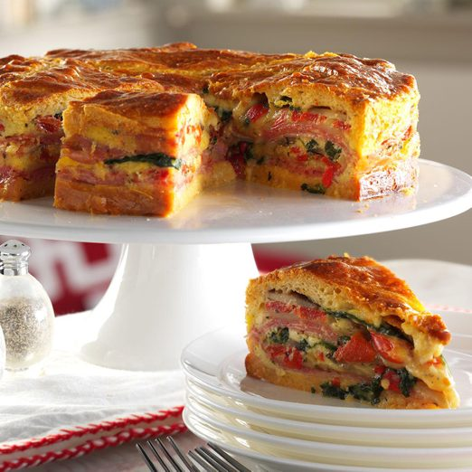

Italian Brunch Torte

Description
This is has layers on layers, for the ultimate breakfast/handover snack. So many calories, just what you need to stat off the day extremely strong. We are going to add so much BACON that this will seize to be an egg dish! Hell Yeah!
Ingredients
- 2 tubes of crescent rolls
- olive oil,baby oil, motor oil, whatever oil you have. I mean if it is good for you 4x4 it should be good for you too
- baby spinach (you monster)
- 7 eggs
- SayCheese!
- Bacon, hell Yeah!
Steps
- Preheat oven to 350°. Place a greased 9-in. springform pan on a double thickness of heavy-duty foil (about 18 in. square). Securely wrap foil around pan. Unroll 1 tube of crescent dough and separate into triangles. Press onto bottom of prepared pan to form a crust, sealing seams well. Bake until set, 10-15 minutes.
- Meanwhile, in a large skillet, heat oil over medium-high heat. Add spinach and mushrooms; cook and stir until mushrooms are tender. Drain on several layers of paper towels, blotting well. In a large bowl, whisk 6 eggs, Parmesan cheese, Italian seasoning and pepper.
- Layer crust with half of each of the following: ham, salami, provolone cheese, red peppers and spinach mixture. Pour half of the egg mixture over top. Repeat layers; top with remaining egg mixture.
- Nah don't foolow the first 3 steps. We don't follow directions over here!
- Let's mix everything up, hell yeah! The image is merely a suggestion.
Home
First recipe
Precious recipe